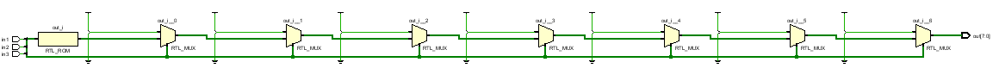
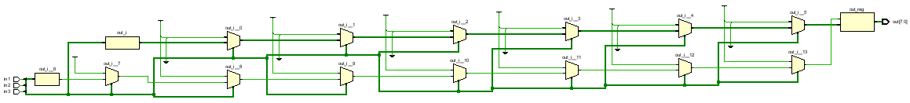
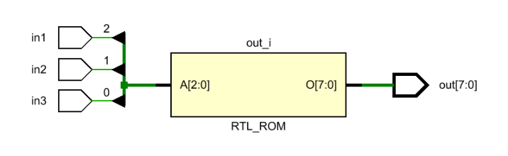
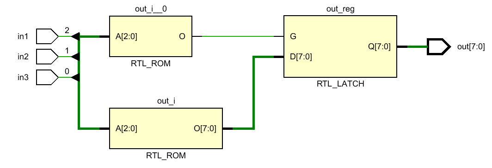
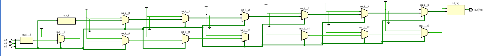
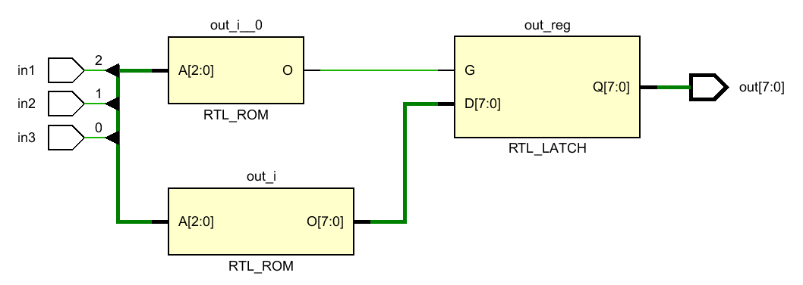

FPGA-03-Verilog语法
本文参考实例熟悉Verilog HDL基本语法，描述FPGA程序设计本质和思路。基于Vivado创建工程，野火ZYNQ-7020开发板实操。
开发背景
软件：Vivado 2018.3
开发板：野火 Xilinx-ZYNQ-7000开发板-皓月开发平台
芯片：XC7Z020CLG400-2
工程目录：
doc：存放visio图形文件，包括模块IO、波形图、原理图（查引脚）、RTL电路
Vivado_Prj：项目文件
基本开发流程：
- 模块划分：明确需要什么功能，需要什么输入输出信号
- 波形绘制：FPGA本质为数字电路，设计之前明确IO真值表。
- 代码编写：设计模块
- 仿真分析：设计testbench文件，但是仿真结果也不等于实测
- RTL综合：实际的代码转化为RTL电路，不同的语句使用的底层电路不相同
- 添加约束：分配FPGA引脚、时序约束等
- 硬件联调：上板验证
语法应用
FPGA程序是并行执行的，所有always块可视作同步执行，设计不同的块就是设计always触发条件。
模块程序
模块IO
仍然拿C的函数举例，通常会包含ｎ个固定的输入量，0或1个输出量。FPGA则使用input、output、output做区分。 通常输入量为wire型。输出则需要对应代码，通常使用组合逻辑时为reg型，特殊使用assign赋值则为wire型。
Latch锁存
程序设计不当时，综合后的RTL电路会产生Latch锁存器，在同步电路中应当避免。其危害如下：
- 毛刺敏感
- 无法异步复位，上电后为不定态
- 静态时序分析复杂化
组合逻辑中产生Latch的条件：
if-else语句缺少末尾的else
1
2
3
4
5
6
7
8
9
10
11
12
13
14
15
16
17
18if({in1,in2,in3}==3'b000)
out = 8'b0000_0001;
else if({in1,in2,in3}==3'b001)
out = 8'b0000_0010;
else if({in1,in2,in3}==3'b010)
out = 8'b0000_0100;
else if({in1,in2,in3}==3'b011)
out = 8'b0000_1000;
else if({in1,in2,in3}==3'b100)
out = 8'b0001_0000;
else if({in1,in2,in3}==3'b101)
out = 8'b0010_0000;
else if({in1,in2,in3}==3'b110)
out = 8'b0100_0000;
else if({in1,in2,in3}==3'b111)
out = 8'b1000_0000;
else
out = 8'b0000_0000;
if-else语句遍历所有条件若缺少最终的else语句，则会在尾部产生锁存：

if-else语句缺少elsecase语句在条件未遍历时缺少default
1
2
3
4
5
6
7
8
9
10
11case({in1,in2,in3})
3'b000: out = 8'b0000_0001;
3'b001: out = 8'b0000_0010;
3'b010: out = 8'b0000_0100;
3'b011: out = 8'b0000_1000;
3'b100: out = 8'b0001_0000;
3'b101: out = 8'b0010_0000;
3'b110: out = 8'b0100_0000;
3'b111: out = 8'b1000_0000;
default:out = 8'b0000_0000;
endcase
case语句遍历所有条件而将
1
23'b111: out = 8'b1000_0000;
default:out = 8'b0000_0000;两句注释之后生成的RTL电路则带有Latch

case语句缺少条件输出变量给自身赋值
变量给自身赋值，其逻辑类似于保持自身，直到某个条件触发后开始变化。恰好与锁存器的功能一致。

if-else语句out=out赋值
case语句out = out赋值
参考本节的图片，也能发现不同语句综合出的电路不相同，if-else内涵顺序结构，其RTL是多个二选一选择器串连，case语句并行选择，只有一个ROM块。
模块调用
类似于函数复用，不过C中通常是编译器来把所有相同的函数名定位到一个地址。而FPGA作为“电路语言”需要为每个模块分配不同的电路，即所谓的实例化。
假设有以下半加器模块：
1 | module half_adder( |
如果想在其基础上设计全加器，只需要实例化两次（两个电路）：
1 | module full_adder( |
只需要添加几个中间变量，如wire h0_sum;，就可以将某个实例的输出给到另一个输入。
仿真程序
仿真程序称之为testbench，名称为tb_XX.v以做区分。
设计某个.v功能模块的仿真程序，类似于顶层模块对底层的调用，不预留参数而仅仅做实例化。通过reg、wire型变量引入inst中。
初始化
使用initial语句块设计输入量的初始状态，使用begin-end块涵盖多个语句。
1 | initial begin |
可使用如下语句输出调试信息：
1 | initial begin |
赋值方式
Verilog内分为阻塞赋值(“=”)与非阻塞赋值(“<=”)。
- 对于组合逻辑，常常使用阻塞赋值，使用时序逻辑时，采用非阻塞赋值。
- 同一always块中尽量用同一赋值方式。
- 同一always块尽量只修改一个变量。
假设有以下代码，定义中间量in_reg，对比阻塞与非阻塞的差异：
1 | module blocking( |
仿真文件中，我们设置clk和in信号为阻塞赋值(同一时刻发生变化)，in信号和时钟沿完全同步变化：
1 |
|
阻塞赋值
对应的电路结构与触发沿没关系，只与输入电平变化有关系。对于同一个begin-end代码块内的语句，同一时刻只执行一条语句，其按先后顺序执行。
注：阻塞赋值不能操作wire型数据。
对于如下代码：
1 | a = 1; |
对应的电路在计算完a值之后计算下一个b值，右侧数值变化时左侧立刻变化。
本节头部的模块中，若赋值处分别为：
1 | in_reg = 2‘b00; |
其RTL电路为D触发器。
always块内阻塞赋值RTL
仿真波形如下：
阻塞赋值RTL
显然，in_reg和out之间并无延迟，数据同步变化。
非阻塞赋值
非阻塞赋值对应电路通常与时钟沿有关，只有在触发沿的时刻才进行非阻塞赋值。同一个begin-end块中的语句并行执行，上一句的值改变仅会影响下一拍的输入。
注：非阻塞赋值只能对reg量赋值，用于always和initial语句中，不可用于assign语句。
对于同样的代码：
1 | a = 1; |
- 赋值开始时：计算语句右侧值
- 赋值结束时：更新左侧值，即T时刻上升沿时a的变化情况不影响计算b的值，会体现到到下一拍
本节头部的模块中，若赋值处分别为非阻塞赋值：
1 | in_reg <= 2‘b00; |
其RTL电路为两个D触发器串联，从电路更容易理解滞后一拍：
非阻塞赋值RTL
非阻塞赋值仿真波形
RTL电路中in_reg和out之间多出一个上升沿D触发器，因此输出滞后一拍。查看D触发器。
附录
阻塞非阻塞赋值语句综合后的差异为一个D触发器，触发方式为边沿触发。
从背景上说，触发器的目的是增加电路“状态”，因为组合逻辑电路能传输信号–输出跟随输入变化，永远只反映现在的状态，即电路输出与上一时刻“状态”无关，
以单一的与、或、非门电路为例，其当前的输入直接影响当前的输出。而“状态”的前提是记忆，或者说保持，其中最简单的记忆电路是两个反相器串联：
保持电路
以上电路：
- Vin与Vout同相
- Vin的值取决于上一拍状态
假设，首个反相器输出Q，则第二个输出Q ’。其端口电压传输特性如下，三个工作点0(a)、1(c)和亚稳态(b)，稳定在a、c两点。
反相器输出特性
SR触发器
在具备保持功能的反相器电路基础上，但其缺少外部输入。将非门替换为与非门或者或非门可增加一个输入量，如图a，当v11=v12=0时，与上图一致。
如果不用与非门替换反相器，则在改变数值时，需要断开上下两部分连接，并改变数据后重新连接
SR触发器或非门电路
按照图b进行符号定义，对于或非门，1信号为决定信号(与门0信号为决定信号)。因此有以下真值表：
| RD | SD | Qn+1 | Q’n+1 |
|---|---|---|---|
| 0 | 0 | QN | Q’N |
| 0 | 1 | 1 | 0 |
| 1 | 0 | 0 | 1 |
| 1 | 1 | 0 * | 0* |
*：当RD、SD同时为1时，能输出最终的结果。错误出现在当11同时消失为00时，理论上Q和Q’将同时输出1，但由于竞争-冒险的情况，两个门电路传输时间并不总是相同，因此最终状态可能是Q=1,将下方门Q’拉低为0，也许反之。此同时切换为00的状态为不定态，因此不建议出现。
根据真值表，称其为Set-Reset触发器。另一种形式是与非门电路，其RD’和SD’低电平有效(0为决定信号)，两者不能同为0。
再进一步，此时R、S信号在部分时刻影响输出，在输入端R、D增加与非门的Load信号，则有：
SR同步电平触发器
(a)图后端为RD’、SD’有效的SR触发器，增设前端的与非门后输入反相：
- CLK = 1时，电路为实时跟随的SR触发器
- CLK = 0时，输入端变化被屏蔽
再进一步，后端SR触发器若接异步输入（低电平有效），可同时具备同步异步功能。
SR同步异步电平触发器
电平触发器问题是，不易使得CLK=1时恰好SR输入变化。因此，在其基础上使用两个相同的SR触发器串联，但使用反相的装载信号CLK。
SR主从触发器
- CLK=1时，主触发器任意变化，从触发器屏蔽输入
- CLK=0时，主触发器根据最后时刻SR输出并保持Qm，Qm作为从触发器的输入，输出稳定的Q值。
因此，整个电路从时刻跟随SR变为仅在CLK下降沿时刻变化。其真值表如下：
| CLK | S | R | QN+1 | Q’N+1 |
|---|---|---|---|---|
| X | X | X | QN | Q’N |
| ↓ | 0 | 0 | QN | Q’N |
| ↓ | 1 | 0 | 1 | 0 |
| ↓ | 0 | 1 | 0 | 1 |
| ↓ | 1 | 1 | 1* | 1* |
触发方式变为下降沿触发，但仍然受限于SR=0的约束条件。由此引出JK触发器。
D触发器
上方的SR触发器有两个主要特点：
- 具备保持功能（输入为00时）
- CLK可决定分段加载SR的值
但也存在以下问题：
- 受限于约束条件SR=0，否则可能出现不定态
- CLK=1时，Q仍根据SR值时刻变化
为解决以上问题1，提出由同一信号决定SR，原始信号+反相信号。此方式SR恒等于0，但弊端是SR不可同时为0，即不具备保持功能。
电平触发D触发器
其真值表简化为：
| CLK | D | QN+1 |
|---|---|---|
| 0 | X | QN |
| 1 | 0 | 0 |
| 1 | 1 | 1 |
参考主从SR触发器，可设计边沿触发的D触发器，如下为CLK上升沿触发D触发器：
- CLK=0，前开后闭
- CLK=1，前闭后开
边沿触发D触发器
其电路符号为：
上升触发D触发器电路符号
边沿D触发器、主从SR触发器、主从JK触发器的性质都是在下一拍反映上一拍的数据，“记忆”功能体现滞后一拍的特性。
JK触发器
基于主从SR触发器，为解决SR恒为0的约束条件，提出将从触发器输出分别接入主触发器输入端，称为JK触发器。
JK主从触发器
其有以下特点：
- 下降沿有效
- QN影响从触发器QN+1
- QN影响主触发器输入，进而影响QmN+1
假设电路处于稳定状态QN=1，若此时JK=1，则输入端JK与QN和Q’N分别相与等效（主触发器等效为SR电平触发器）后的输入为01，QN+1被复位。若QN=0，则输出被置1。即：
QN=1，屏蔽置位端J，否则屏蔽复位端Ｋ
JK主从等效于去除约束后的SR主从
根据第1点，显然同一时钟周期内，Qm最多翻转一次。
仍以QN=1为例，主触发器屏蔽J后的等效JK仅有两种情况00、01，即QmN+1保持或输出0，因此QN+1可能保持或翻转。
因此，如果在CLK=1时，JK输入保持，则只观察下降沿时JK的值。若JK未被屏蔽的信号出现翻转，则输出QN+1必定翻转：
- QN=1时，K翻转
- QN=0时，J翻转
JK触发器输出
参考资料
[1] 野火 FPGA ZYNQ-7000系列FPGA Verilog开发实战指南 | 哔哩哔哩
[2] 王红《数字电子技术基础》 触发器逻辑功能的分类 | 哔哩哔哩
————————— End —————————
经历是过程，经验是目的。